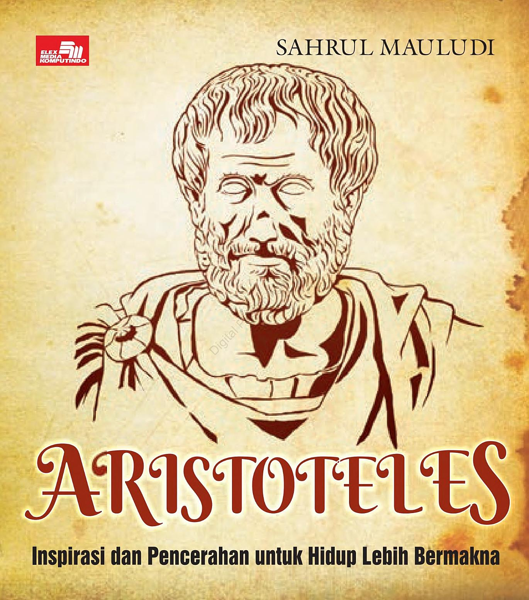

PDF

Aristoteles: Inspirasi untuk Hidup Lebih Bermakna
Buku reflektif karya Sahrul Mauludi yang mengulas pemikiran Aristoteles tentang etika, kebajikan, dan makna hidup manusia.
Baca BukuPDF

Manifesto Wacana Kiri
Buku panduan pelatihan basis yang membahas wacana kiri, kesadaran kritis, dan perjuangan ideologis dalam konteks sosial.
Baca BukuPDF

Aswaja An-Nahdliyah
E-book pengantar Ahlussunnah wal Jama’ah An-Nahdliyah sebagai fondasi ideologi dan keislaman warga NU.
Baca BukuPDF

Kiai Hologram
Kumpulan esai Emha Ainun Nadjib yang kritis, reflektif, dan puitis dalam membaca agama, budaya, dan kemanusiaan.
Baca BukuPDF

MADILOG
Karya monumental Tan Malaka tentang Materialisme, Dialektika, dan Logika sebagai dasar berpikir ilmiah.
Baca BukuPDF

Senja & Hujan: Cerita yang Telah Usai
Kumpulan cerita reflektif bernuansa senja, hujan, kenangan, dan perpisahan yang menyentuh sisi emosional.
Baca Buku